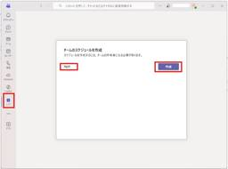

JBS Tech Blog
https://blog.jbs.co.jp/
JBS Tech Blogは、日本ビジネスシステムズ（JBS）の社員が分担して執筆を担当し、技術情報を発信しているブログです！Microsoft製品や生成AI関係の最新情報をはじめ、様々な製品やサービスの情報を幅広く公開しています。2022年3月より運用を開始し、営業日はほぼ毎日記事を公開しています。
フィード

Teams Phone通話キューの呼び出し先にシフトを指定する
JBS Tech Blog
Teams Phoneの通話キューのエージェントに「シフト」が選択できるようになりました。ユーザーが設定している勤務スケジュールによって、通話キューからの着信を制御できる機能のようです。シフトを選択するとどのような動作となるのかを検証してみました。
5時間前
【Microsoft×生成AI連載】【Copilot Studio】添付ファイルを処理する実装方法を比較してみた
JBS Tech Blog
【Microsoft×生成AI連載】シリーズです！ Microsoft Copilot Studio（以下、Copilot Studio）のエージェントを作成すると、Microsoft TeamsやMicrosoft 365 Copilotのチャットから利用できます。その際に、ユーザーがファイルを添付することも可能です。 今回はCopilot Studioでユーザーの添付したファイルを処理するための実装方法を大きく2つ紹介し、それぞれの利用シーンとメリット、注意点を解説します。 これまでの連載 Copilot Studioで添付ファイルを処理する実装方法の紹介 OneDriveからファイルを取…
3日前

【Power BI】データモデル構築からレポート・ダッシュボード作成まで（ダッシュボード編：アラートによる運用自動化） 1
1
JBS Tech Blog
本記事では、Microsoft Fabricのウェアハウスに格納された売上・在庫・顧客データを活用し、Power BIで分析環境を構築する実践的なステップをご紹介します。 前回は、レポートの作成についてご紹介しました。 【Power BI】データモデル構築からレポート・ダッシュボード作成まで（レポート編） - JBS Tech Blog 今回はダッシュボード編として、主要KPIを集約したダッシュボードの作成方法と、ダッシュボードを起点としたアラート通知による運用自動化を紹介します。 ※本記事のデータは、前回用いたダミーデータをそのまま利用しています。 ダッシュボードの概要 ダッシュボードの作成…
4日前
【Microsoft×生成AI連載】Microsoft 365 CopilotのWriting Coachを使ってみた 1
JBS Tech Blog
【Microsoft×生成AI連載】シリーズの記事です。 Microsoft 365 Copilotには、Writing Coachという文章作成支援機能があります。 本記事では、このWriting Coachについて紹介します。 これまでの連載 Writing Coachの紹介 Writing Coachの使用方法 Writing Coachを使ってみる Writing Coachを使用する際のTips 最初に用途を明確にする 1回で完成形を作成しようとしない 添削の際は観点を指定する 利用シーンとメリット、注意点 利用シーン メリット 注意点 まとめ おまけ(Copilot Chatによる…
5日前
【Dell PowerEdge】iDRACを専用ポートではなくLOMポートで共有設定してみた 1
JBS Tech Blog
PowerEdge サーバのリモート管理には iDRAC が欠かせません。 通常は iDRAC 専用の物理ポート(Dedicated NIC)を使うのが簡単で安全ですが、ラックのポート不足や配線の都合、コスト面を理由に LOM（LAN on Motherboard） ポートと共有するケースもあります。 本記事では、iDRAC を専用ポートではなく LOM ポート(Shared NIC)で共有する際の設計上の注意点、実際の設定手順を整理します。 対象読者とゴール Shared NIC 構成のメリットとデメリット 本環境の IP アドレスについて iDRAC を LOM と共有するための設定方法（…
6日前
Power Appsで入力した情報をSharePointリストに格納する方法 1
JBS Tech Blog
Power AppsはSharePoint Online(以下SPO)をはじめ、DataverseやExcelなど、さまざまなデータソースと連携することができます。 本記事では、特によく利用されるSPOを対象に、Power Appsで編集したフォームデータをSPOリストへ連携する方法について記載します。 事前準備 リストの作成 項目の設定 Power Appsで入力したデータの送信 データの追加 ボタンの設定 入力を必須にした項目が未入力の場合は登録ボタンをクリックできないようにする 「登録」ボタンをクリックするとSharePointリストにデータが格納される データが送信された後はPower…
7日前

【Microsoft×生成AI連載】【Copilot Cowork】Copilot Coworkで作ったカスタムスキルを他の人に共有してみた
JBS Tech Blog
本記事では、Copilot Cowork上で作成したカスタムスキルを、チームメンバーに展開するまでの流れをご紹介します。
10日前
Teams Phoneの通話履歴を管理者で確認する
JBS Tech Blog
Teams Phoneでの通話履歴をTeams管理センターにて確認することができます。組織全体の通話履歴を確認する方法と、特定のユーザーの通話履歴を確認する方法を分けてご紹介します。
11日前
【Microsoft×生成AI連載】Microsoft Copilot StudioのWork IQ Calendar MCPで会議予約してみた
JBS Tech Blog
今回はMicrosoft Copilot StudioでWork IQ Calendar MCPを使用してみます。 Work IQとは、Microsoft 365 Copilot やエージェントが組織の仕事の内容を理解するための仕組みです。メール、会議、チャット、ファイル、業務システムなどのデータを基に、より関連性の高い回答や推論、アクションを可能にします。Microsoft Copilot StudioではMCPを通して利用する事ができます。 参考 Work IQ の概要 | Microsoft Learn Work IQ MCP の概要 (プレビュー) - Microsoft Copilo…
12日前
データベースのパフォーマンスを測定する ～ BenchBase
JBS Tech Blog
データベースの性能を正しく評価するには、実際のアプリケーションに近い負荷を再現し、スループット・レイテンシ・リソース使用率などを測定する必要があります。これが「データベースのベンチマーク」です。 ベンチマークを行う目的は明確で、次のような場面で役立ちます。 DBMS の比較：PostgreSQL と MySQL の違いを定量的に知りたい 設定変更の効果検証：パラメータ調整やインデックス追加の前後で性能がどう変わるか ボトルネックの特定：CPU・I/O・ロック競合など、どこが遅いのかを把握する クラウド移行時の性能確認：オンプレとクラウドでどれくらい差が出るか ただし、実際の業務ワークロードをそ…
13日前
SaaS版FLY 移行結果
JBS Tech Blog
Microsoft Teams や Exchange Online をはじめとするクラウドサービスの活用は、多くの企業において当たり前のものとなっています。それに伴い、これらのサービスを安全かつ効率的に運用するための「テナント移行」の重要性も、年々高まっています。 こうしたクラウド環境間の移行を円滑に進めるためのソリューションとして、AvePoint が提供する FLY は、幅広い企業で活用されています。 これまでの記事では、SaaS版FLYを用いた移行にあたり必要となる以下の手順について紹介してきました。 アプリプロファイルの構築 テナント接続の事前準備 移行対象・ポリシー・マッピングを整理…
14日前
Copilot+ PC の NPU を活用して、完全ローカルRAGシステムを構築してみた（AI Toolkit × Lemonade Server）
JBS Tech Blog
クラウド要らずのAI活用法！NPU搭載のCopilot+ PCでPDF情報を即座に検索。実用的手順を詳述。
17日前
【Microsoft×生成AI連載】【やってみた】Cowork(Frontier)でPowerPointの資料を作成してみた
JBS Tech Blog
【Microsoft×生成AI連載】久保田です。 今回は Cowork(Frontier)を活用し、入力ファイルと簡単な指示を与えてPowerPointの資料を作成してみました。 ※この記事の情報は2026/4/27時点のものです。 Microsoft 365 Copilotや生成AIに興味がある方など、様々な方に読んでいただきたい記事となっておりますので、是非ご覧ください。 これまでの連載 Cowork(Frontier)の概要 Cowork(Frontier)を利用してみた Coworkを開く Coworkを利用する 利用シーンとメリット 利用シーン メリット 注意点 まとめ おまけ(Co…
17日前
Teams Phone自動応答にて「音声コマンド」を利用する
JBS Tech Blog
Teams Phoneの代自動応答で設定できるメニューオプションにて、発信者の発声により転送先を選択させる「音声コマンド」というものがあります。今回、この「音声コマンド」がどんなものか検証してみました。
18日前
Copilot StudioのエージェントからMicrosoft Foundryのエージェントに接続する
JBS Tech Blog
Copilot Studioで作成したエージェントでは、他のエージェントに接続してマルチエージェント構成を組むことが出来ます。 今回は、Copilot Studioで作成したエージェントを、Microsoft Foundryで作成した別のエージェントに接続する方法を紹介します。 おことわり Copilot Studioのエージェントに他のエージェントを追加する方法 Copilot StudioからMicrosoft Foundryのエージェントに接続する 動作イメージ Microsoft Foundryでの事前準備 用意したエージェント 実際の動作 接続情報の取得 プロジェクトエンドポイント …
18日前
【Exchange Online】ユーザー毎に参照するアドレス帳を制限する
JBS Tech Blog
Exchange Onlineのアドレス帳ポリシー（ABP）によって、企業はユーザーアクセスを制御し、セキュリティを強化できます。ポリシー設定はPowerShellで簡単に行え、効率的な情報管理を実現します。
19日前
【Microsoft×生成AI連載】エージェント活用ユースケース~エージェントを活用してチームのスケジュール管理を行う~
JBS Tech Blog
ローコードでエージェント作成が可能なCopilot Studioを使用し、ブログ投稿スケジュールを管理する実例を紹介。エージェント作成のメリットと具体的な活用方法を学びます。
19日前
【Microsoft×生成AI連載】【やってみた】リサーチツールの「モデル会議」でClaudeとGPTを同時に使う
JBS Tech Blog
この記事は 【Microsoft×生成AI連載】週次連載開催！ の連載記事です。 【Microsoft×生成AI連載】今回はMicrosoft 365 Copilotのリサーチツールに追加された「モデル会議」機能を使用します。 これまでは、GPTなど1つのAIモデルで調査を行うのが一般的でしたが、モデル会議を使用することで、GPTとClaudeを同時に活用するとどのような結果が得られるのかを検証してみます。 Microsoft 365 Copilotに興味がある方、普段から利用されている方などさまざまな方に読んでいただきたい記事となっておりますので、ぜひご覧ください。 ※この記事の情報は202…
24日前
【Power Apps】時間帯によって背景画像を変更する方法
JBS Tech Blog
Power Appsでのアプリ開発に役立つ、時間帯に応じて背景画像を変更する方法をステップバイステップで紹介。
25日前
OCI オブジェクトストレージ ライフサイクルポリシーによるオブジェクト管理
JBS Tech Blog
OCI オブジェクトストレージ ライフサイクルポリシーを使って、バケット内のオブジェクトを自動削除する方法を紹介します。
1ヶ月前
Power Automateで複数SharePointリストの更新を自動連携
JBS Tech Blog
複数のSharePointリストを利用されている場合、一方のリストの更新をもう一方のリストにも反映したいといった機会があるかと思います。 レコード数が多い場合、都度手動で2つのリストを更新しようとすると、レコードを探し出すだけで時間がかかってしまいます。 実際にそういった場面に遭遇した際に、Power Automateで自動更新を実装することができたので、今回はその方法とその際の注意点をご紹介したいと思います。 ※記載の内容は執筆時点の公開情報を元にしております。 Power Automateフロー作成までの事前準備 自動更新フローの作成 トリガー アクション ステータス確認 リストBの情報の…
1ヶ月前
【Microsoft Fabric】パイプラインでストアドプロシージャを実行する方法を解説
JBS Tech Blog
前回の記事では、ストアドプロシージャの概要とMicrosoft Fabric Notebook（以下、Notebook）の作成手順、Notebook上でストアドプロシージャを作成する方法について説明しました。 本記事では、Microsoft Fabric Pipeline（以下、パイプライン）でストアドプロシージャを実行する方法について解説します。 本記事の想定読者 前提 パイプラインの概要 パイプラインの操作方法 パイプラインの作成方法 パイプラインにストアドプロシージャを組み込む方法 実行するストアドプロシージャの指定 パイプラインの実行 手動実行 定期実行 パイプラインの実行履歴の確認 …
1ヶ月前
Zscaler のアーキテクチャを理解する
JBS Tech Blog
ZscalerのZero Trust Exchangeは、「クラウドでスケールするセキュリティ基盤」と説明されることが多く、小規模な拠点から数万ユーザー規模まで柔軟に対応可能です。しかし、なぜここまで大規模にスケールできるのか、その内部構造まで理解している方は意外と少ないかもしれません。 内部構造を理解することで、トラブルシューティングや設計判断、最適な導入計画の策定に役立てることができます。 本記事では、Zero Trust Exchange（ZIAを中心とした構成）を Control Plane / Enforcement Plane（Public Service Edge）/ Loggi…
1ヶ月前
Mac を JBS と導入しませんか？
JBS Tech Blog
「Mac は業務で使えない」はもう過去の話。Microsoft 365 との連携や PSSO による認証体験の進化を踏まえ、MacBook の PoC を最短距離で始める方法を解説します。
1ヶ月前
GA 版 Microsoft Agent Framework を使って Microsoft Foundry 上の既存エージェントを利用する
JBS Tech Blog
Microsoft Agent Framework が先日GAされ、安定版がリリースされました。Agent Framework と Microsoft Foundry を組み合わせると、Foundry 上に存在するエージェントを既存資産として呼び出す構成も取りやすくなります。本記事では、"Microsoft Foundry にすでに存在するエージェントを、Microsoft Agent Framework の API から呼び出す" 方法に関して記載します。 実行環境 この記事でやること 実装 Microsoft Foundry へのエージェント追加方法 サンプルコード Microsoft F…
1ヶ月前
Microsoft Agent Framework で A2A を試す: Python でリモート AI エージェント連携を最小構成から理解する
JBS Tech Blog
異なる環境やサービスで動作するエージェントを、呼び出し側で個別実装の違いを強く意識せずに連携したい場面があります。Microsoft Agent Framework で A2A を使えば、そのような外部エージェントを「リモートの AI エージェント」として接続し、Agent Framework から統一的な方法で利用できます。この記事では、ローカルで実行した AI エージェントを、Agent Framework を使ってリモートの AI エージェントとして接続・利用する方法を紹介します。Agent Framework で A2A 連携を試したい方や、異なる agent を統一的な方法で呼び出す…
1ヶ月前
【Microsoft×生成AI連載】PowerPointのExplainerを使ってみた
JBS Tech Blog
本記事では、PowerPointに新しく追加された「Explainer」を紹介します。 Explainerを利用することで、スライド内の専門用語や図表をCopilotが分かりやすく説明します。 これにより、外部サイトを参照することなく、PowerPointの画面内だけでスライドの内容を確認できます。 ※ この記事の情報は2026/4/15時点のものです。 これまでの連載 機能概要 実際に使ってみた 略語や専門用語の確認 図表の確認 スライドの確認 利用シーンとメリット、注意点 利用シーン メリット 注意点 まとめ おまけ（Copilot Chatによる本記事の要約） これまでの連載 これまでの…
1ヶ月前
Work IQとは？ Microsoft Foundry+Work IQでMicrosoft 365データを活用する方法
JBS Tech Blog
本記事ではWork IQに関する情報を提供します。実際にMicrosoft FoundryのAI AgentにWork IQを適用して設定・検証を行う手順を、エージェントプレイグラウンドだけでなくプログラムから活用する方法を述べます。また、本記事の内容はCopilot Studioでも応用可能な内容となっています。
1ヶ月前
【Microsoft×生成AI連載】【M365 Copilot】Copilot検索を使ってみた
JBS Tech Blog
保存場所を気にせずにMicrosoft 365上の情報を横断検索できるCopilot検索を活用し、探す手間を減らし、必要な情報にスムーズにたどり着く方法をご紹介します。
1ヶ月前